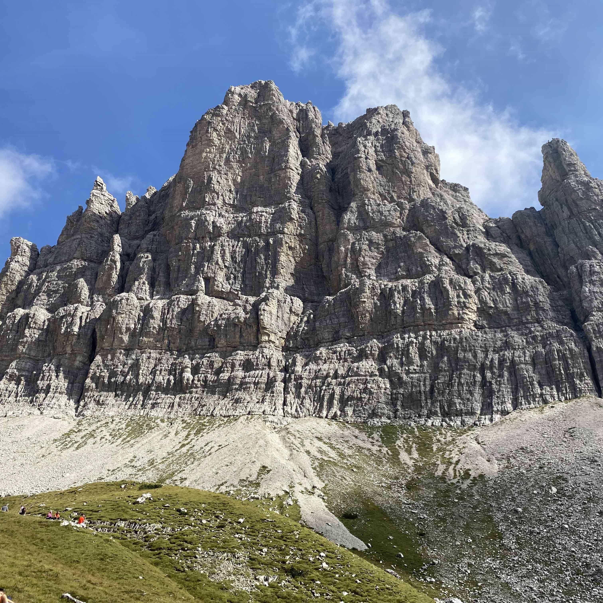
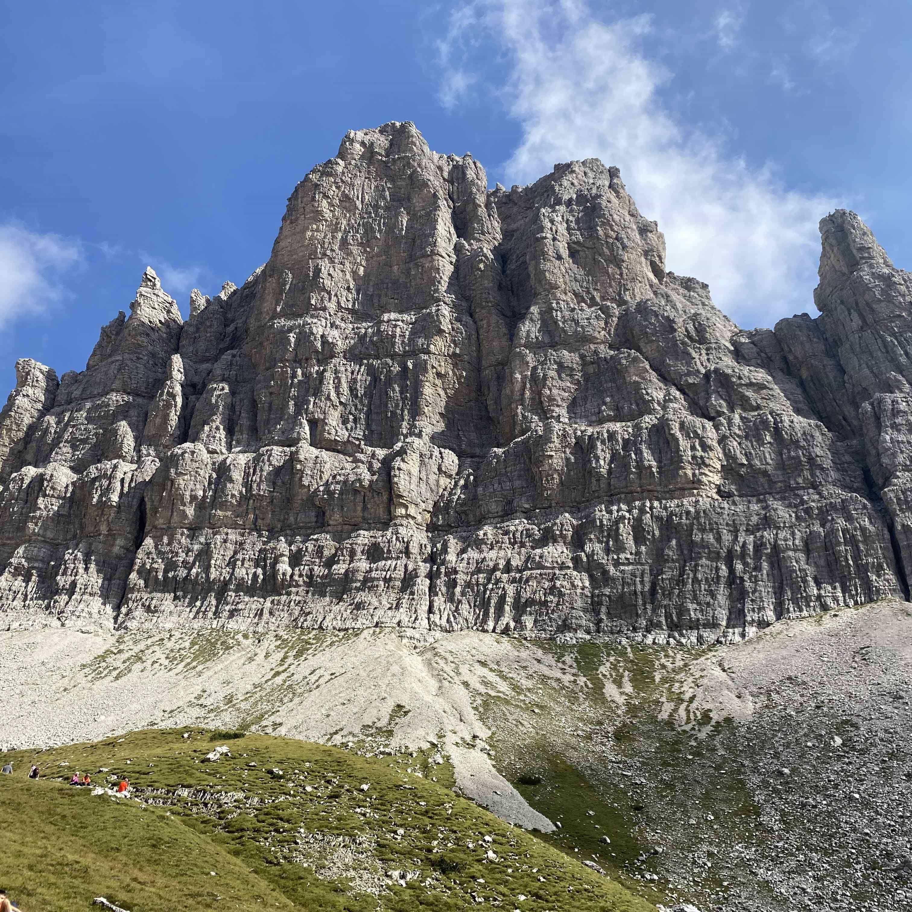

Taking on the Campanile di Val Montanaia hike from Rifugio Pordenone is like stepping into a natural amphitheater where the mountains are the performers, and you're the captivated audience—albeit one that's slightly out of breath. This trail offers a blend of challenging ascents, breathtaking vistas, and a touch of geological whimsy that makes every hiker question their sanity in the best possible way..
Trail Overview:
- Distance: Approximately 7.05 kilometers (about 4.38 miles)
- Elevation Gain: Around 1,022 meters (approximately 3,353 feet)
- Highest Elevation: 2,127 meters (6,978 feet)
- Difficulty: Difficult
- Estimated Time: 7 hours and 14 minutes (including breaks, photo ops, and existential musings)
Trail Highlights:
- Rifugio Pordenone (Starting Point): Nestled at 1,249 meters, this refuge is your launchpad into the wild. Getting here involves navigating a rustic road that could double as an obstacle course—dodging boulders and testing your vehicle's suspension. Consider it a warm-up for the adventure ahead.
- The Ascent via Trail 353: Once you bid farewell to the shaded beech forest, brace yourself for an exposed climb up a rocky slope. This isn't your average walk in the park; expect to engage in some hands-on scrambling over sizable boulders. Think of it as nature's way of giving you a full-body workout.
- Navigational Nuances: The trail markings can be as elusive as a mountain goat on a foggy day. Pay close attention, especially during the transition where the path shifts from hugging the left wall to the right. Missing this subtle crossover could lead you into a treacherous gully, adding unintended excitement to your hike.
- First Glimpse of the Campanile: As you ascend, the iconic Campanile di Val Montanaia comes into view—a towering rock spire that seems to pierce the sky. But don't let its apparent proximity fool you; there's still a hearty climb ahead before you can bask in its majestic presence
- Bivacco Perugini: At 2,060 meters, this bivouac offers a haven for weary hikers. Surrounded by a natural amphitheater of jagged peaks, it's the perfect spot to rest, refuel, and ponder why you didn't take up a less strenuous hobby, like knitting.
Trail Navigation:
- Given the sporadic trail markings, consider bringing a detailed map or GPS device. And remember, when in doubt, trust your instincts—or better yet, a compass.
- Go with people you wouldn’t mind getting lost with
Embarking on this hike is a rite of passage for adventurers seeking to conquer the "Stone Bell Tower" of the Dolomites. It's a journey that challenges the body, sharpens the mind, and rewards the spirit with memories as enduring as the mountains themselves. Happy hiking!